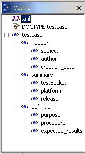
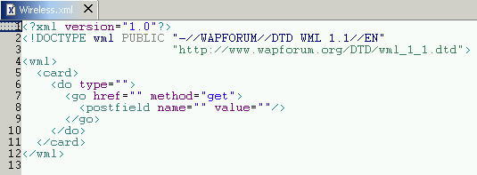
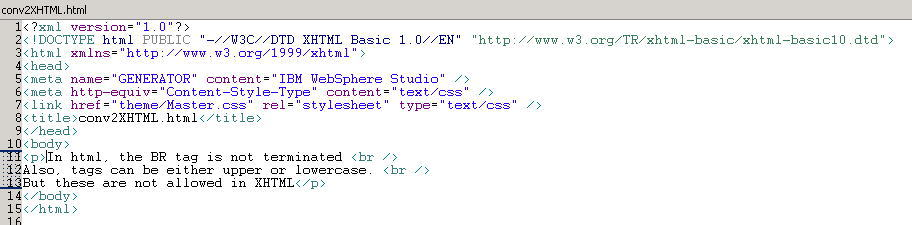
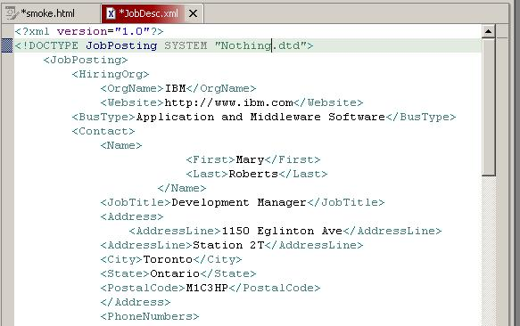
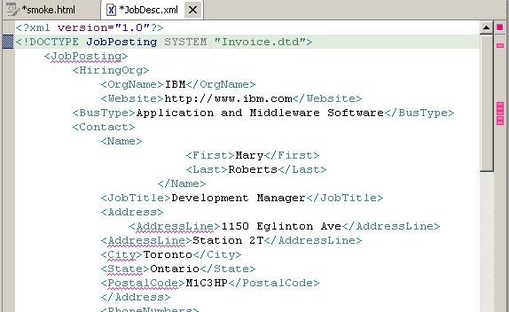
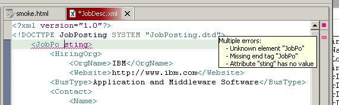
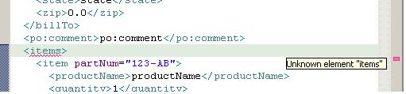
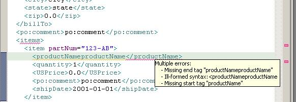
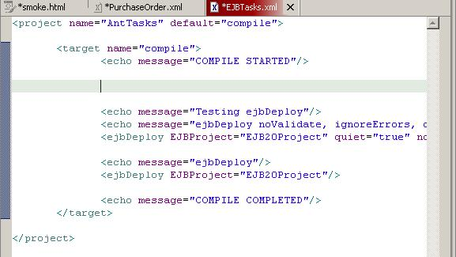

Smoke Test - XML Editor
Last updated: July 16, 2003 (pa)
This Smoke Test primarily focuses on the RTP portion of the XML
Editor, which is the Source page of the XML Editor. It also performs
some integration testing. For example, it tests synchronization between
the Design and Source pages of the XML Editor, as well as with the
Outline and Properties views. It also verifies that files created
through the XML File wizard and references to the XML Catalog are
supported as expected.
NOTE: XML files are case-sensitive so be sure that things appear
exactly as noted.
Setup
Starting Clean
- Delete any existing workbench
- Start Studio
Open an XML Perspective
- Select Window->Open Perspective in the menu bar
- Select Other...
- Select XML
- Verify the following views appear in the XML perspective (Note that the location
of the Outline and Navigator views are reversed from the Web perspective):
- Outline
- Navigator
- Tasks
- Properties
Project Creation and File Imports
- Create a Project, XMLTest2
- Import the following files into this project:
- Invoice.dtd from plugins/com.ibm.etools.xmlbuilder/test
- JobDesc.xml from plugins/com.ibm.etools.xmlbuilder/test
- JobPosting.dtd from plugins/com.ibm.etools.xmlbuilder/test
- PurchaseOrder.xsd from plugins/com.ibm.etools.xsdeditor/samples/PurchaseOrder
- ATS.dtd from plugins/com.ibm.sed.editor/smoke/setupFiles
- basicXHTMLex.html from plugins/com.ibm.sed.editor/smoke/setupFiles
- gotchaTCBeans.set from plugins/com.ibm.sed.editor/smoke/setupFiles
- Wireless.xml from plugins/com.ibm.sed.editor/smoke/setupFiles
Create/Open/Edit test cases
Create an XML File from scratch
- Make sure you are in the XML Perspective (if not, switch to it)
- Select the Create a new XML file toolbar button.
- Verify the Create a XML File wizard appears and the Finish button is disabled.
- Accept the default to Create XML file from scratch
- Go to the Next page
- Select XMLTest2 as the folder
- Specify a File name of fromScratch
- Select Finish
- Verify the following:
- fromScratch.xml appears in the Navigator view.
- fromScratch.xml is open to the Design page of the XML Editor and has focus.
- the Design tab appears before the Source tab in the XML Editor.
- the Design and Source page show <?xml version="1.0" encoding="UTF-8"?>.
- the Outline view shows an entry for the xml processing instruction.
- Switch to the Source page. Verify the cursor appears at the beginning of the file.
- Right mouse button 2 and verify a popup menu appears.
- Position the cursor within the XML declaration and verify version and encoding appear in the Properties view. This used to work, but now it's not working. Opened defect 177662 - XML declaration attributes not appearing in Properties view. Generally, processing instructions follow no standards but specific support for attributes of <?xml?> is still requested in the defect. AFW-this still does not work in v5.0.1
- Continue to the next section.
Identify a local DTD (verifies a DTD is immediately recognized; in the past, you had to close and reopen the Workbench)
- Type the following after the XML declaration in fromScratch.xml: <!DOCTYPE Invoice SYSTEM "Invoice.dtd">. The text should be syntax highlighted as you type and you should see an entry get added to the Outline view.
- Hit Enter to create a new line after the DOCTYPE declaration.
- Hit Ctrl+Space.Verify only Invoice and comment appear in the proposal list. (NOTE: Invoice is the root element)
this might be picky but "Invoice" doesn't show up until the second time you
press ctrl+space.. the first time you press it, that's when the DTD seems to get read in,
the second time, the list is correctly populated. (pa) 20020626
- Hit Enter to accept Invoice as a selection. Verify the Invoice start and end tags are inserted into the Source and the cursor appears between them. An element entry should appear for Invoice in the Outline view. (NOTE: XML is case-sensitive so be sure you see Invoice and not invoice everywhere).
- Hit Ctrl+Space. Verify the following appears in the proposal list (in the order shown):
- Select Header. Hit Enter to accept the selection.
- Verify the Source now looks like the following and the cursor appears before invoiceNumber:

- Verify Header appears nested under Invoice in the Outline view.
- Close this file, and respond Yes when prompted to save the changes.
- Reopen the file and verify the changes were saved.
- Close the file. Verify no save changes prompt appears.
Create an XML File from an imported DTD
- Select the File->New->XML.
- Verify the Create a XML File wizard appears.
- Select to Create XML file from a DTD file
- Go to the Next page
- Select XMLTest2 as the folder
- Specify a File name of fromLocalDTD
- Go to the Next page
- Select the Import File button
- Use the Browse button to find /plugins/com.ibm.sed.editor/smoke/setupFiles/testcase.dtd
- Select XMLTest2 as the folder. Would be nice if this were already filled in. See defect 178354.
- Select Finish to close the Import File wizard
- Expand XMLtest2 and then select testcase.dtd.
Was expecting to see the imported file selected in the Workbench files list, but it wasn't. See defect 178354.
- Go to the Next page.
- Select testcase as the Root Element.
- Accept the default to Create required content only.
- Verify testcase.dtd appears as the System Id.
- Select Finish. Verify fromLocalDTD.xml appears in the XML Editor. Verify the Source page looks like the following:

- Verify the Outline view and the formatting indentation reflect the proper element/tag hierarchy. Here's what the Outline view should look like (after you expand it):

- Verify selection synchronization between the Design page, Source page, Outline view,
and Properties view.
- From the Source page, click within the header start tag.
Verify header is selected in the Outline view and in the Design
page and that the following properties and property values appear in the
Properties view:
| Property |
Value |
| category |
webtool |
| number |
idvalue0 |
| state |
|
| subCategory |
Accessability |
| subSubCategory |
|
- From the Outline view, select the testBucket tag.
Verify testBucket is selected in the Design page and the current marker
in the lefthand margin of the Source page indicates the range of the
testBucket tag. The Properties view should show a property of type
with a value of ComponentTest.
- Verify edit synchronization between the Design page, Source page, and
Properties view (focus here is on adding attributes and attribute values).
- From the Source page, use content assist to insert an attribute and attribute value
for the header start tag.
- Position the cursor after the category attribute in the header start tag.
- Type space and then hit prompt for content assist.
- Verify only state="UnderConstruction" and subSubCategory appear in the proposal list (content assist is smart enough not to list any attributes that already exist in the start tag since attributes can only appear once. Cool!).
- Select state="UnderConstruction". Hit Enter.
- Verify state="UnderConstruction" is inserted in the Source page (content assist automatically inserts any default values. Cool!). Verify the Design page and Properties view reflect this change.
- From the Properties view, update the state attribute value to "UnderReview"
(a pulldown list of values should be available). Verify the change is reflected
in the Source and Design pages.
- From the Design page, add an attribute and attribute value to the header tag.
- Bring up the popup menu for the header tag.
- Select Add Attribute->subSubCategory from the popup menu (it's smart
enough to know which attributes haven't been specified yet ... like content
assist. Cool!).
- Type in a value of Keyboard support.
- Verify the change is reflected in the Source page and Properties view
another small thing.
after you add the attribute, then click over to source, the cursor is visible
but the attribute text is barely. maybe the text should be scrolled over a bit more so you
can read the attribute name at least. i couldn't see the cursor right away, so i had
to press the arrow key.
(pa) 20020626
Open an XML File that references a remote DTD
- Open the Wireless.xml file.
- Verify it looks like the following in the Source page:

- Verify the Outline view and the formatting indentation reflect the proper
element/tag hierarchy. Here's what the Outline view should look like:

- Verify content assist.
- Create a new line after the wml start tag.
- Prompt for content assist on the new line.
- Verify the following appear as proposals (in the order shown):
- card
- comment
- head
- template
- Create a new line after the wml start tag.
- Type a space before the ending delimiter on the card start tag (so that it reads as <card >).
- Prompt for content assist
- Verify the following appear as proposals (not necessarily in the
order shown).
- class
- id
- newcontext="false"
- onenterbackward
- onenterforward
- ontimer
- ordered="true"
- title
- xml:lang
- Position the cursor at the beginning of the method attribute value in the go start tag.
- Prompt for content assist
- Verify get and post appear as proposals.
- Verify selection synchronization between the Design page, Source page, Outline view,
and Properties view.
- From the Source page, click within the card start tag.
Verify card is selected in the Outline view and in the Design
page and that the content assist proposals listed above for the
card tag appear as properties in the Properties view. No values should appear for these properties.
- From the Outline view, select the postfield tag.
Verify postfield is selected in the Design page and the current marker
in the lefthand margin of the Source page indicates the range of the
postfield tag. The Properties view should show the following properties,
none of which should have a value:
- Verify edit synchronization between the Design page, Source page, Outline view, and
Properties view (focus here is on adding elements/tags).
- From the Source page, copy and paste the card tag.
- Position the cursor in the card start tag.
- Notice the range of the card tag in the lefthand margin area.
- Highlight then copy this range of lines using the Edit->Copy pulldown menu selection.
- Paste after the card end tag using Ctrl+V.
- Verify the appropriate lines were pasted n the Source page.
Verify the Design page, Outline view, and the Properties
view reflect this change.
- From the Design page, add another card tag.
- Bring up the popup menu for the wml tag.
- Select Add Child->card from the popup menu.
- Verify the Source page, Outline view, and the Properties
view reflect this change. NOTE: it should have generated out
the same thing as the original card tag, with the exception
that a method attribute should not exist in the go start tag.
AFW-only card start/end tag generated.
** still does that 20020620 (pa)
perhaps there should be an option for adding just the child, or the
child and all of its children...
Create and Validate an XML File from a schema
(these steps are taken from the 'Design' smoke test, except the Source Page is the focus)
- Right mouse button 2 on the PurchaseOrder.xsd and select Generate->XML File....
-
Accept the default file name.
-
In the Select Root Element page, choose purchaseOrder as root element.
-
Choose Create required and optional content.
-
Enter po as the Namespace Prefix.
- On Finish, a PurchaseOrder.xml is created and the XML Editor is opened. (Select Source Page if not already there.)
- Run Validate. The PurchaseOrder.xml should be invalid.
-
Double click on the error message. It should be positioned to the line
in error, i.e. the partNum attribute. It is invalid because the
value is not set to match the XML schema pattern facet "d3-[A-Z]{2}" (3
digits followed by 2 characters).
- In the Source View, locate the partNum attribute under element item.
Enter the value 333-AB.
- Run Validate. The PurchaseOrder.xml document should now be valid.
- Place the cursor after the <items> tag and be sure "item" is listed in the content assist list.
- Rename the purchaseOrder.xsd to, say, purchaseOrderHOLD.xsd
- Verify that content assist still gives you "item" as above.
- Now select the Reload Dependancies toolbar button.
- Verify that now content assist no longer lists any items other
than the macro "comment" and that the "comment" macro's text displays in the additional info popup.
- Repeat making purchaseOrder.xsd workable again.
Create an XML File from a new DTD catalog entry

The following comes directly from the 'Design' Smoke Test: XML Catalog for XML Schema
-
Run Validate on PurchaseOrder.xml to make sure it is valid
-
Create a new project, XMLTest3
-
Move the PurchaseOrder.xsd into XMLTest3.
- Run Validate on PurchaseOrder.xml. You will notice that it is no longer
valid. The error message should give you a hint that the file PurchaseOrder.xsd
can no longer be found.
-
Open the Workbench->Preferences and select the XML Catalog.
-
Create a new user-specified entry and browse for PurchaseOrder.xsd in XMLTest3. Keep the default values.
-
Click on the Reload button to reload the catalog settings.
-
Run Validate. The PurchaseOrder.xml document should now be valid.
Save/Validate test cases
Saving an XML File
(NOTE: the Identify a local DTD test case tests the save prompt on a file close.)
- If any files are open, select File->Close All (or Ctrl+Shift+F4) to close them.
- Open any xml file in the XMLTest2 project.
- Verify the following (no-changes-made condition):
- File->Save is disabled.
- File->Save All is disabled.
- File->Save As is enabled.
- the Save Editor Contents toolbar button (a diskette) is disabled.
- the Save To Another Location toolbar button is enabled.
- Save is disabled on the Source popup menu. Would be nice if the Design popup menu also had a Save selection (as well as other selections that the Source popup menu provides). See defect 178352.
- no * appears in the file tab.
- Make a change in the Source page.
- Verify the following (changes-made condition):
- File->Save is enabled.
- File->Save As is enabled.
- File->Save All is enabled
- the Save To Another Location toolbar button (a diskette) is enabled.
- Save is enabled on the Source popup menu.
- a * appears in the file tab.
- Hit Ctrl+S.
- Verify the no-changes-made conditions apply.
- Make a change in the Design page.
- Verify the changes-made conditions apply.
- File->Save All.
- Verify the no-changes-made conditions apply.
- Make a change in the Properties view.
- Verify the changes-made conditions apply.
- Select Save from the Source popup menu.
- Verify the no-changes-made conditions apply.
- Close and then reopen the file.
- Verify the changes that were made in the previous steps appear in the Design and Source pages.
Saving an XML File across multiple workbenches (optional)
- Open any xml file in the XMLTest2 project.
- Make a change to the file.
- Open another XML Perspective in a new window (Workbench) by selecting Window->New Window
- Verify another XML Perspective is opened in a new Workbench window.
- Open the same xml file as in the first step above.
- Verify the changes-made conditions apply in both XML Perspectives and verify that the changes made to the file in the first perspective appear in the same file in the second perspective.
- Make some changes to the file in the second perspective.
- Verify these changes appear in the same file in the first perspective.
- Close the file in the second perspective and respond Yes to the save changes prompt.
- Verify the no-changes-made condition applies in the first perspective and then try to modify the file.
Validating a non well formed XML File (no DTD/Schema)
(NOTE: it's important that the following be typed in. This test case tries to cover some of the more common errors that render an XML file as not being well-formed. It is not intended to verify that all possible errors are being detected and gracefully handled. )
- Select the Create a new XML file toolbar button.
- Accept the default to Create a new XML file from scratch
- Go to the Next page
- Select XMLTest2 as the folder
- Specify a File name of NonWellFormed
- Select Finish
- Create a new line after the XML declaration.
- Prompt for content assist.
- Select comment.
- Embed more than 2 consecutive dashes in the comment.
(NOTE: XML validity states that more than 2 consecutive dashes can not be embedded within a comment)
- Type in the remaining lines as directed below:
- create a start and end tag that don't match in their case sensitivity
(e.g., <tag> and </Tag>).
- create a start and end tag where the start tag contains an attribute value that is not enclosed in quotes.
(NOTE: this is permitted in HTML, but is considered not well-formed XML)
- create tags that are not properly nested.
(NOTE: a child tag must be completed before its parent tag)
- create a start tag without a corresonding end tag.
(NOTE: all start tags must have a corresponding end tag unless the tag is an empty tag, in which case the shorthand version can be used (<shortTag/>)).
- do not provide an attribute value (="value").
(NOTE: this is permitted in HTML for those attributes that have only one value, but it's not valid in XML)
- define an attribute more than once in a start tag.
- Save the file.
-
Verify errors are listed in the Tasks view for the above violations.
* only catches first error (the comment -- dashes), is this correct behavior?...
20020620 (pa)
- Fix some of the errors and then select the Validate toolbar button.
Verify the errors that were fixed are no longer flagged in the Tasks view.
i noticed somthing when i was fixing the tag that had no end tag.
the start tag was "<noEnd>"
i typed "</no" then pressed ctrl+space, and the autocomplete suggestion was "End".
it seems like "End>" should have been one of the options along w/ "End". (pa) 20020626
opened defect 213911
- Save the file.
- Fix the remaining errors.
- Save the file and verify no errors appear any more in the Tasks view for the file.
- Reopen the file and verify everything was saved.
Validate an XML File based on a DTD
- Open fromScratch.xml.
- Delete a character from one of the start tags (mistyping a tag is not uncommon).
- Prompt for content assist within the bad tag. Verify a message appears in the status area
of the Workbench indicating that the bad tag is an unknown tag.
AFW-no error in status area
actually, content assist sometimes knows how to fix it,
otherwise it doens't do a thing, the menu doesn't even come up, even though
it's enabled(pa) 20020620 opened defect 213099
- Select the Validate toolbar button.
- Verify an error appears in the Tasks view and an error marker appears in the Source page
to flag the invalid tag.
- Select Edit->Undo from the Source page and re-validate the file.
- Verify the bad tag error no longer appears in the Tasks view.
- Remove the Header end tag from the Source page.
- Save the file.
- Verify an error appears in the Tasks view indicating that the Header end tag is missing
- Close the file, responding Yes to the save changes prompt.
- Double-click on the error in the Tasks view, and verify fromScratch.xml opens to the appropriate line in the Source page of the XML Editor.
- Here's some other violations that can be attempted:
- Specify a bad attribute.
- Specify a bad attribute value.
- Specify child tags out of sequencing order
- Violate the occurrence indicator for a tag (e.g., if the DTD shows ?, then only 0 or 1 occurrences of the tag is permitted).
- Save the file.
- Verify errors are listed in the Tasks view for the above violations and
that error markers appear on the appropriate lines in the Source page.
- Reopen the file and verify everything was saved.
Source Specific test cases (optional)
Using the XML Styles Preference
NOTE: this preference is used to set styles for syntax highlighting in the Source page of the XML Editor.
- Open any XML file that has enough tags to provide syntax hightlighting.
- While that file is left open, go to the Preferences page, expand Web and XML Files > XML Files, then select XML Styles.
- On that page, use the mouse to click on a tag name within the preview text. This will cause Tag Names to appear in the Content type combo box at the top and Foreground, Background and Bold will update to show its current styles.
- Select a tag name and select the Bold check box. Then press Apply, and you should see the change take effect in your active editor.
- Select "Restore Defaults" and make sure the tag names are set back to not bold.
Using the Auto Completion Content Assist Preference
Double-Clicking Within the Source
(NOTE: if you continue to double-click at a given cursor position, the selection area will continue to expand. When the maximum region area has been reached, the next double-click will cause the original selection. So, the selections will wrap/cycle. Cool!).
- Open JobDesc.xml.
- Double-clicking within tag content:
- Double-click within Middleware on line 7.
- Verify Middleware is selected in the Source and Design pages and BusType is selected in the Outline view. Middleware wasn't selected in the Design page as had expected. The Design page only seems to stay in sync at the element/tag level like the Outline view. I need to talk to Craig about this to see if a defect should be opened.
AFW-middleware is still not highlighted in design view
Still not doing so on 20020820 (nsd)
Still not doing so on 20021030 (nsd)
- Double-click again at the same cursor position.
- Verify Application and Middleware Software is selected in the Source and Design pages and BusType remains to be the only thing selected in the Outline view.
- Double-clicking again will cause cycle back to the original selection.
- Double-clicking within a tag name:
- Double-click within HowToApply on line 61.
- Verify HowToApply is selected in the Source page, Design page, and Outline view.
class, distribute, id, and name should appear in the
Properties view. Only distribute should show a value.
- Double-click again at the same cursor position.
- Verify the whole HowToApply start tag (including its delimiters) is selected
in the Source page. HowToApply should remain selected in
the Design page and Outline view.
- Double-clicking again will cause cycling back to the original selection.
- Double-clicking within an attribute name:
- Type Ctrl+End to position the cursor at the end of the file.
- Double-click within distribute on line 61. Verify distribute is selected
in the Source page and HowToApply is selected in the Design page and Outline
view. class, distribute, id, and name should appear in
the Properties view. Only distribute should show a value.
- Double-click at the same cursor position. Verify distribute="internal" is
selected in the Source. Nothing should change in the Design page or views.
- Double-click at the same cursor position. Verify the whole HowToApply start tag is selected in the Source page (including its delimiters). Nothing should change in the Design page or views.
- Double-clicking again will cause cycling back to the original selection.
- Double-clicking within an attribute value:
- Type Ctrl+Home to position the cursor at the beginning of the file.
- Scroll down such that line 61 is visible.
- Double-click within internal on line 61. Verify internal is selected
in the Source page and HowToApply is selected in the Design page and Outline
view. class, distribute, id, and name should appear in
the Properties view. Only distribute should show a value.
- Double-click at the same cursor position. Verify "internal" is
selected in the Source. Nothing should change in the Design page or views.
- Double-click at the same cursor position. Verify distribute="internal" is
selected in the Source. Nothing should change in the Design page or views.
- Double-click at the same cursor position. Verify the whole HowToApply start tag is selected in the Source page (including its delimiters). Nothing should change in the Design page or views.
- Double-clicking again will cause cycling back to the original selection.
Formatting a File Created by Different Editors
-
Import the JobPosting.dtd and JobDesc.xml from plugins/com.ibm.etools.xmlbuilder/test (if they haven't already been imported)
-
Open the JobDesc.xml. Check the source for indentation to see if it preserves
the white space from the original document.
-
The orignal document uses spaces and tabs, so the formatting will appear a little wrong.
By using the right/left arrows, verify that some space is spaces and some space
is tab characters.
- Select Format Document (or press Ctrl+Shift+F) to be sure it formats.
- The default is to format with tabs ... verify only tab characters remain in file, not spaces.
(Just a little movement with the arrow keys should suffice.
- Go to the preference page to change the format settings for the XML Source Editor and uncheck the Indent using tabs option. While there, verify that the tab width field will not allow other values to be entered except numbers.
- Format the document again and be sure this time spaces were used.
-
* i know this is there for auto-formatting,
but should there be an option for the editor to insert spaces instead of tabs
when the tab key is pressed, so you don't have to go back and format the code?(pa)
Open an XML File for a shipped DTD catalog entry
To verify that shipped DTDs & web project creation is working:
-
Create a J2EE web project with a standard web.xml file in it. Be sure
there is no web-app_2_3.dtd file in the directory. In the web.xml file
itself, mangle the web-app_2_3.dtd filename in the system id a little, such as
change it to xeb-app_2_2.dtd to be sure it can't be found via the
normal http method (This isn't really necessary for the function to work,
it's just to be sure only the catalog function is in effect).
-
Go to the preferences page, and open the XML Catalog. Verify there
is an entry for -//Sun Microsystems, Inc.//DTD Web Application 2.3//EN.
The entry would look something like
file:C:/builds/wsa-jdk-20010625_0100-125-R09/eclipse/plugins/com.ibm.etools.j2ee/dtds/web-app_2_3.dtd
-
Once all the prep work is done (files deleted, text modified), you should
exit and restart Studio to be sure you have a fresh start.
-
Open the web.xml file and be sure that content assist works for that file.
For example, right after the end of the </display-name> tag, ctrl-space
should provide a long list of elements, starting with servlet, servlet-mapping, etc.
This indicates the shipped DTD function is working and configured
correctly (at least for the web.xml file).
Integration test cases
Flat Web.xml Editor
- Open web.xml with Flat web.xml editor
- Click on the Source view tab and verify syntax highlighting
- Click on web-app tag and make sure web-app is selected in Outline view and in the Property view, id with value "WebApp" is displayed
- Change a welcome-file entry in Source view and make sure change is reflected in Pages tab
- Add a new welcome page in Pages tab and make sure new entry appears in Source view
- Verify content assist and hover help work
DTD Editor
- Open JobPosting.dtd
- In Source view, type Ctrl-End to go to the end of the file.
- Verify syntax highlighting.
- Click on !ATTLIST JobPostingID and verify the area enclosing the attribute definition for JobPostingID is selected in the Source view, JobPostingID is selected in the Outline View, and Name: JobPostingID is displayed in the Design view
- Add an attribute to JobPostingID by right-clicking the element in the Outline view and selecting Add Attribute. NewAttribute should appear under JobPostingID attribute.
- Select NewAttribute in Outline view. Verify Design view displays NewAttribute's info and in the source view, the cursor is at the beginning of NewAttribute
- Change the name NewAttribute to OldAttribute in the Design view and verify the change also appears in the Outline and Source view
- Change the name OldAttribute to OldAtt in the Source view and verify the change also appears in the Design and Outline view
- Hover help and content assist should not appear in this editor
XSL Editor
- Create a new XSL file
- Verify syntax highlighting in Source view
- Using content assist, add the xsl:template tag and verify the Outline view and Properites reflect changes
- Change a property and Properties view and make sure Source view reflects change
- Hover help and content assist should appear in this editor
EJB Editor
- File->New->Other->Examples->EJB 1.1->AutoWorld and take defaults
- Open ejb-jar.xml with EJB Editor
- Verify syntax highlighting in Source view
- In Source view, click on a tag and verify corresponding tag is selected in Outline view
- Change an ejb-ref in Source view and verify change is reflected in References tab
- Add an attribute or child in Outline view and make sure Source is updated
- Hover help and content assist should appear
CSS Editor
- Open Master.css
- Verify syntax highlighting
- In source view, change H1 color to red. Verify in Outline view H1 properties is selected and color's value is red in Properties view
- Refresh Preview and verify H1 color is red
- Verify Outline/Source/Properties view by clicking items in each view and verifying corresponding items are selected/displayed in other views
- Content assist should appear, but hover help shouldn't
PageDesigner
- HTML files
- Create a new HTML file, myHTML2.html
- Open file with PageDesigner
- Verify syntax highlighting in Source view
- Use Content Assist to add H1 tag in source. Verify the additional info popup when selecting the tag in the content assist popup. Select H1 and hit enter.
- Verify Outline, Design, Preview, Properties view reflect change
- In Outline view, add a heading to the body by right-clicking body->Add Child->Cite-H3->H1
- Make sure changes were reflected in all the other views
- Verify Outline/Source/Properties view by clicking items in each view and verifying corresponding items are selected/displayed in other views
- Verify hoverhelp appears when hovering over tags and not when hovering over whitespace and content
- Verify tags with the prefix jsp: do not appear in Content Assist
- JSP files
- Create a new JSP file, myJSP.jsp
- Open file with PageDesigner
- Verify syntax highlighting in Source view
- Use Content Assist to add jsp:include tag in source. Verify the additional info popup when selecting the tag in the content assist popup. Select jsp:include and hit enter.
- Verify Outline, Design, Preview, Properties view reflect change
- In Outline view, add attribute info to the jsp:directive.page tag by right-clicking jsp:directive.page->Add Attribute->Info
- In Properties view, select the info attribute and push the Restore Default Value toolbar button. Verify that the info attribute has been removed.
- Make sure changes were reflected in all the other views
- Verify Outline/Source/Properties view by clicking items in each view and verifying corresponding items are selected/displayed in other views
- Verify hoverhelp appears when hovering over HTML tags only and not when hovering
over JSP tags, whitespace and content
- XHTML files
- Create a new XHTML file, strictXHTML.html by Using the New HTML File wizard. Select XHTML for the Markup language dropdown and on the second page, in the Document Type dropdown, select XHTML 1.0 Strict
- Verify the file looks like this:

- Create a new XHTML file, basicXHTML.html by Using the New HTML File wizard and on the second page, in the DOCTYPE dropdown, select -//W3C//DTD XHTML Basic 1.0//EN
- Verify the file looks like this:

- Perform the following on both files:
- Verify syntax highlighting in Source view
- Verify tags are all in lower-case, and xml declaration tags have been inserted
- Invoke Content Assist between the head tags and insert meta
- Prompt for Content Assist within the meta tag and verify that:
- for Strict XHTML, xml:lang is included in the list.
- for Basic XHTML, xml:lang and xmlns are included in the list, while dir and lang are not.
- Use Content Assist to add p tag between the body tags. Verify the start and end tags are both inserted. Also verify the cursor is now between the p start/end tags
- Use Content Assist to add br tag between the p tags. <br /> should be inserted (In HTML, <BR> is inserted according to the case preferences). Verify that if you prompt for content assist outside of the p tags, unlike HTML, the br proposal will not appear.
- Verify Outline, Design, Preview, Properties view reflect change
- Verify Outline/Source/Properties view by clicking items in each view and verifying corresponding items are selected/displayed in other views
- Verify hoverhelp appears when hovering over tags only and not when hovering over whitespace and content
- Create a new HTML file, conv2XHTML.html
- Type the following within the body tag "In html, the BR tag is not terminated<BR>Also, tags can be either upper or lowercase.<BR>But these are not allowed in XHTML"
- Save the file
- Right-click the file in the Navigator View and select Convert to XHTML.
- Verify the following choices are in the DOCTYPE dropdown list:
- XHTML 1.0 Frameset
- XHTML 1.0 Strict
- XHTML 1.0 Transitional
- XHTML 1.1
- XHTML Basic 1.0
- XHTML MP 1.0
- Select the doctype XHTML Basic 1.0
- Verify the file looks like this:
- 
- Delete the DOCTYPE declaration from the file and save the file
- Validate the HTML Syntax
- There should be an error in the Task view stating unknown attribute, xmlns
- In the Navigator View, right-click the file and select Properties. Change the Default HTML DOCTYPE in the Web Content Settings to XHTML Basic 1.0
- Validate HTML Syntax and the unknown attribute should disappear.
- Open the imported file, basicXHTMLex.html
- This file has unterminated empty tags and other errors that appear in the Task View
- Cleanup the document by right-clicking the Source and select Cleanup Document..
- In the Cleanup dialog, choose lower case for tag and attribute name case and check to Insert missing tags, Quote attribute values, Format source
- All of the errors in this file should now be fixed.
- Validate HTML Syntax. No errors should appear
Frames
- Create a new HTML file, myFrame.html
- In the Design view, from the toolbar, Frame->Split Frame->Split Vertically and take the default
- In the Source view, verify frame source is dislayed and views are synchronized
- Click on switch frame pages dropdown and switch to myFrame.html and verify the source.
- Click on switch frame pages dropdown and switch to framepage1.html and verify the source.
- Click on switch frame pages dropdown and switch to newpage2.html and verify the source.
- Type some text in the body and verify Design and Preview tabs are updated with the change
PageDesigner Classic
- Follow the same steps as PageDesigner
Other test cases
HoverHelp
- Verify hoverhelp appears for XML, XSL, Web.xml, EJB, PageDesigner Source Editors
- Toggle the hoverhelp off by clicking the Hide Hover Help icon on the toolbar while in PageDesigner Source View
- Verify hoverhelp no longer appears for XML, XSL, Web.xml, EJB, PageDesigner Source Editors
- Toggle the hoverhelp on by clicking the Show Hover Help icon on the toolbar while in XML Source View
- Verify hoverhelp appears for XML, XSL, Web.xml, EJB, PageDesigner Source Editors
Associate the XML Editor to a new file type
- Window->Preferences.
- Expand Workbench.
- Select File Associations.
- Select the Add button to add a new file type.
- Specify a file type of *.set and then close the Add dialog.
- Verify *.set is selected in the list of file types.
- Select the Add button to associate the XML Editor to the new file type.
- Select XML Editor from the list of editors. Verify it appears with its own special icon. Close the dialog.
- Verify XML Editor appears as the default editor now for the *.set file type.
- Open gotchaTCBeans.set from the Navigator view. Verify it opens to the XML Editor.
Temporary error annotation tests
SETUP
make sure you have the following files, all in the same folder:
- JobPosting.dtd
- JobDesc.xml
- PurchaseOrder.xsd
- PurchaseOrder.xml
- Invoice.dtd
- EJBtasks.xml
- testcase.dtd
- testcaseBROKEN.dtd
- xhtml_temp_error_test.html
- jsp_temp_error_test.jsp
On the Window > Preferences > Web and XML Files > XML
Files > XML Annotations preference page
hit "Restore Defaults", then press the "OK" button.
On the Window
> Preferences > Web and XML Files > XML Files > XML Source preference page
make sure "Use inferred grammar in absence of DTD/Schema" is checked, then press "OK"
XML
Verify that Validation is working according to a
DTD
- open JobDesc.xml in the XML Editor
- switch to the source page (if the editor isn't already open to it)
- * verify that there are no errors in the overview ruler or in the text
- in the <!DOCTYPE JobPosting SYSTEM "JobPosting.dtd"> tag, change ths SYSTEM Id from "JobPosting.dtd" to "Nothing.dtd"
- * verify that there are still no visible errors in the overview ruler or text:

- in the <!DOCTYPE JobPosting SYSTEM
"JobPosting.dtd"> tag, change ths SYSTEM Id from "Nothing.dtd"
to "Invoice.dtd"
- * verify that these errors appear in the overview
ruler and text:

- in the <!DOCTYPE JobPosting SYSTEM
"JobPosting.dtd"> tag, change ths SYSTEM Id from "Invoice.dtd"
to "JobPosting.dtd"
- * verify that the errors in the overview
ruler and text go away (may not happen right away, you may need to edit the tag one more time, like add a space then delete it) per CMVC #...
- repeat the above steps with the "use inferred grammar"
preference off (requires close and open of the editor w/ JobDesc.xml, don't save). The results should be the same.
- now with the "use inferred grammer" preference back on
- close and open the editor w/ JobDesc.xml (to ensure inferred grammar is enabled)
- put a space in the <JobPo |sting> tag
- * verify you get these errors
- * verify that you get these messages when you hover over the first error on the overview ruler

- now delete the doctype tag, and the xml version tag
- only syntax checking should be possible now
- hover over the first error on the overview ruler
- * verify that you get these messages (there is no "unknown element" message)

- undo all of your edits to return to the original document
- * verify that all errors are removed
- redo all of your edits
- * verify that the errors reappear properly
Verify Thread Safety
- create another folder in the same project
- switch to the Resource Navigator view
- with JobDesc.xml open, drag JobPosting.dtd into the new folder
- * verify that the operation succeeds
- drag JobPosting.dtd back into the original folder
- * verify the operation succeeds
Verify Validation is working according to an XSD
- make a copy of PurchaseOrder.xsd in the same folder and call it PurchaseOrderEDIT.xsd
- open PurchaseOrderEDIT.xsd in the XSD editor
- replace all (case insensitive) strings "item" with the string "chicken"
- save PurchaseOrderEDIT.xsd
- open PurchaseOrder.xml in the XML Editor
- * verify that there are no errors
- change the xsi:schemalocation="http://www.ibm.com
PurchaseOrder.xsd to
xsi:schemalocation="http://www.ibm.com PurchaseOrderEDIT.xsd
- (note: you may have to edit the xsi:schemaLocation attribute to see the error (eg. type a space, then delete it) per CMVC #...
- * verify this message when you hover over the first error in the overview ruler:

- place the cursor after <productName>|, and press backspace
- *verify this message when you hover over the 2nd error in the overview ruler

- undo one step
- * verify the last set of errors goes away
- undo the rest of the steps
- * verify that all errors go away (note: you may have to edit the xsi:schemaLocation attribute to make the last error go away (eg. type a space, then delete it) per CMVC #...
Validation with cut&paste
- open EJBTasks.xml, there should be no errors
- cut the following tags:
<accessBeanRegeneration EJBProjectName="EJB20Project"/>
<accessBeanRegeneration EJBProjectName="EJB20Project" suspendProjectValidation="true"/>
<accessBeanRegeneration EJBProjectName="EJB20Project" suspendProjectValidation="true"/>

- save and close
- reopen EJBTasks.xml
- paste these lines back in:
<accessBeanRegeneration EJBProjectName="EJB20Project"/>
<accessBeanRegeneration EJBProjectName="EJB20Project" suspendProjectValidation="true"/>
<accessBeanRegeneration EJBProjectName="EJB20Project" suspendProjectValidation="true"/>

- * verify there are still no errors
Different types errors
- open testcaseBROKEN.xml
- * verify there are errors with messages described as in the comments in the file indicate
- fix the errors according to the comments in the file, and the messages
- *verify temporary annotations go away w/out
saving (the errors w/out an icon in the left vertical ruler)
- save the file (or validate)
- * verify the rest of the errors (persistant) go away
Temporary annotations from workbench validators
XHTML/HTML
- open xhtml_temp_error_test.html
- follow the instructions in the file comments
JSP
- open jsp_temp_error_test.html
- follow the instructions in the file comments
ALMOST THE END!
To continue testing other components owned by Source Editor, please follow these links: